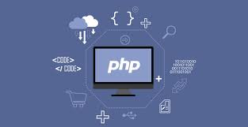
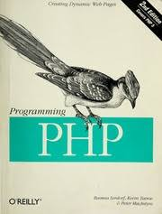
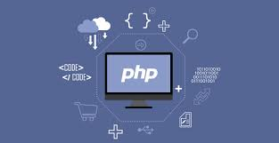
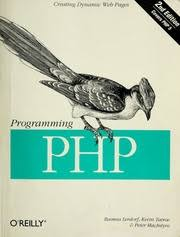

Dasturlash tillari haqida ma'lumot
PHP (/pi:.eɪtʃ.pi:/; inglizcha: PHP: Hypertext Preprocessor — „hipermatnli protsessor“) — skript tili boʻlib, web serverda oʻzgaruvchan HTML fayllarini yaratishda qoʻllanadi.[1] 1994-yilda kanadalik dasturchi Rasmus Lerdorf tomonidan yaratilgan.[2] Hozirgi kunda deyarli barcha hosting-provayderlar mazkur tilni qoʻllab-quvvatlaydi. Odatda, PHP maʼlumotlar bazasi bilan ishlatiladi. PHP GNU GPL litsenziyasi orqali tekin tarqatiladi.
.jpg) 



PHP dasturlash tilida o'zgaruvchilar har xil turdagi ma'lumotlarni saqlashi mumkin va har xil ma'lumotlar turlari turli xil ishlarni bajarishi mumkin.Assalomu aleykum dasturchilar, dizayner yoki bo'lajak dasturchilar :) Bugundan boshlab PHPdan shaxsiy maqolalarimni yozishni boshlayman. Avval o'zimni tanishtirsam mani ismim Farrux, internetda esa WebStyle deb atashadi :). Mirobod kompyuter texnologiyalari kollejida o'qiyman. Keling o'zim haqimda emas PHP haqida ma'lumot beray. PHP juda keng qo'llanadigan dasturlash tilli bo'lib, internet juda katta qismini egallab o'lgan. Nega aynan internetni deyishingiz mumkin. Chunki PHP web server texnologiyalari hisoblanib, web server yani saytda ishlaydi. Masalan qolgan dasturlash tillarida tuzilgan dasturlar konsolda yoki windows(oyna) shaklida ishlaydi. Tuzgan dasturimizning natijasini ko'pchilikga yoqimsiz va tushunarsiz bo'lgan konsolda ko'ramiz. Agarda biron-bir odamga oddiygina tuzgan dasturingizni ko'rsatmoqchi bo'lsangizchi? Yoqimisiz, qop-qora konsolni ko'rsatasizmi? :) Windows elementlaridan foydalanib, o'ziga xos dizaynga ega dastur tuzishga esa anchagina vaqt ketadi. Lekin tuzgan taqdiringizda ham oddiy foydalanuvchini e'tiborini qozonish juda qiyin bo'ladi. Unda qanaqa dastur tuzish kerak deb o'ylaysiz. Masalan siz oddiy hisob kitob qiluvchi dasturning kompyuter uchun C++ yozdingiz va huddi shu dasturni PHPda yozib chiqdingiz. Endi shu dasturni do'stingizga foydalanishni tavsiya qilsangiz, do'stingiz nima qiladi? Albatta o'sha PHPda yozilgan dasturni ishlatib ko'radi. U oddiygina mobil telefoni yoki planshetidan o'sha dastur joylashtirilgan saytga kirib ko'radi va albatta bu dasturingizdan qoyil qo'ladi :) Yani dastur foydalanish qulay bo'lgan platformaga tuzish kerak. Ayni paytda web sayt va mobil telefonlar foydalanish hamma uchun qulay. Masalan hozir internet juda rivojlanib, foydalanish esa qulaylashib bormoqda. Demak kelajakda internet bundan ham rivojlanib ketadi. Shuning uchun internetga dastur ya'ni Web App yozish kerak. Bunda esa bizga PHP yordam beradi.